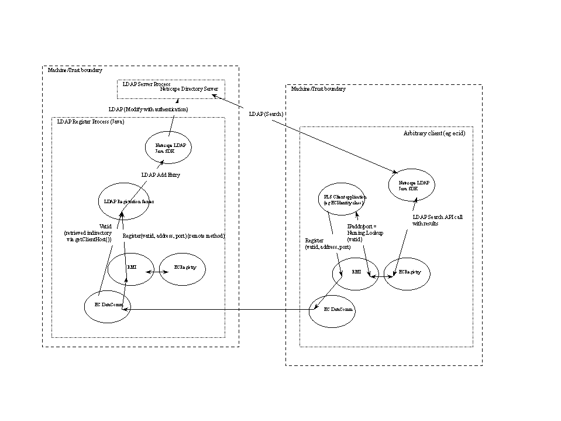

LDAP Process Location Server
Last updated:
98/07/30 Jeff
- Original version.
Introduction
This document describes how we will use an LDAP server
for the purpose of implementing a Process Location Server.
Requirements
Ability for ecid to register and update the mapping between
the ecid's vatid and a location expressed by an IP address and port.
The vatid will be authenticated. Others should be prevented
from changing the registered location of another's vatid.
vatids can not be wildcard searched for. The client
doing a lookup must fully specify the vatid, and only one
vatid/location pair should be returned per lookup.
Ability to handle 0.2 registrations per second. (See the
Palace-ECID Test Plan for
more details on how this number was arrived at.)
Architecture
There are two operations that a PLS must implement:
Registering a vatid with a specific IP address and port combination, and
Looking up an IP address/port by vatid.
Registering a vatid
Registrations are done via a LDAP Registration Server.
This server exports a "register" method available via RMI. The EC
comm system is used beneath RMI to support the authenticating
of the vatid used on the connection. This will ensure that
the vatid being registered is indeed the vatid of the remote
end that initiated the connection.
Vatid Lookups
Vatid lookups are performed using the LDAP. We are currently
using the Netscape Java LDAP API, which is documented in the
Netscape Directory SDK 3.0 for Java Programmer's Guide.
The following diagram shows the overall architecture, and the
usage of registration and lookup.

Off the shelf alternatives
Most of this is off-the-shelf. To attain full off-the-shelf-ness
we would need to utilize LDAP authentication mechanisms for the
registration process. Utilizing our comm system is a much cleaner
alternative.
Other Design Objectives, Constraints and Assumptions
TBD.
Implementation overview
Performance
TBD. Performance should take into account:
- Performance of LDAP servers: How well does it scale?, How
many servers do we need?, etc.
Testing Strategy and Debugging
TBD. Testing will include load testing of the server using
load test drivers.
Interactions and dependencies with other subsystems
TBD.
Design Issues
Resolved Issues
Open Issues